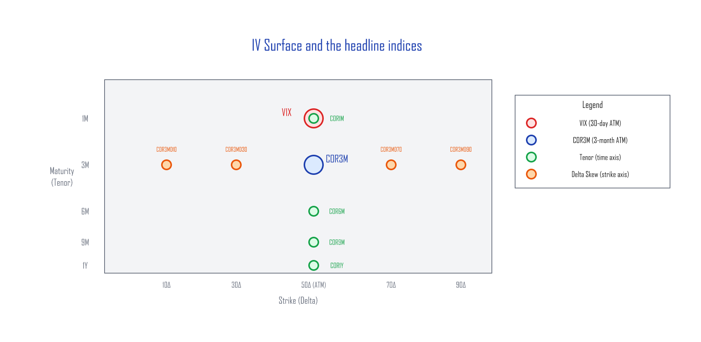
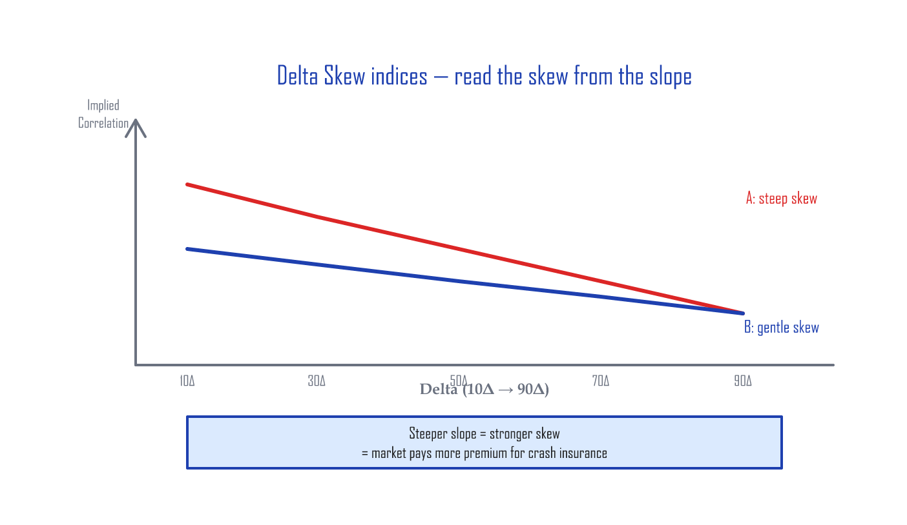
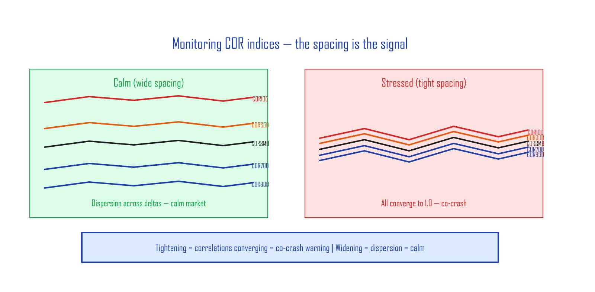

Market-Sentiment Volatility Indices — Implied Correlation and the IV Surface¶
Related: Volatility Skew | Hedging the Wings
📚 Where this article fits: this is the concept and taxonomy of COR/SKEW indices. The day-to-day monitoring tool is Volatility Dashboard. They're a pair.
What implied volatility actually is¶
The implied volatility (IV) of an S&P 500 index option is the future-volatility estimate that SPX option market participants have implicitly agreed on for the period running to expiration.
| What it is | |
|---|---|
| Historical / Realized Volatility (HV/RV) | Computed from prices that have already happened |
| Implied Volatility (IV) | The forward estimate the options market has agreed on, after digesting all available information |
Think of SPX-option IV as the market-cleared price of insurance. When the crowd starts pricing in upside, call IV rises. When the crowd starts pricing in downside, put IV rises.
If you watch the IV surface carefully enough, can you read the market's collective intent — without ever opening the news?
Why bother watching these indices?¶
In February 2020, before mainstream news really picked up the COVID story, the options market was already moving. Implied correlation had jumped from around 30% to north of 60% — the unmistakable signature of institutions buying put insurance in size.
If you wait for the news, you're always late. The IV surface and the COR indices reflect institutional positioning first, so they give you a faster signal than the headlines.
The IV surface¶
If you plot S&P 500 (SPX) option implied volatility with moneyness (strike vs spot) on one axis and maturity (time to expiration) on the other, you get the IV surface.

Each point on this surface is the IV at a specific strike-and-maturity combination. CBOE computes a number of implied-correlation indices by sampling specific points on this surface.
VIX¶
VIX is the market's fear gauge. It computes the expected 30-day volatility of the S&P 500 from a wide strip of OTM SPX options (calls and puts together). It's not a single ATM point — it integrates a broad slice of the IV surface. So VIX is the SPX option market's collective 30-day-ahead volatility forecast.
How VIX is calculated (deeper dive)
VIX is built using a variance-swap replication formula. Instead of reading a single strike's IV, it computes a weighted sum of OTM option prices across many strikes to get the expected 30-day variance. Take the square root, annualize, and you have VIX.COR3M — 3-Month Implied Correlation¶
CBOE launched this index on July 1, 2021. Its formal name is Cboe 3-Month Implied Correlation Index.
COR3M reads the implied correlation at the 3-month maturity, at-the-money (50Δ) point on the IV surface.
Implied correlation measures the relationship between the S&P 500 index option's IV and the IV of the top 50 single-name options, expressed as a 0–100% number. In plain terms: how much the index members move together.
| Market state | Implied correlation | What it says |
|---|---|---|
| Uptrend | ~30% | Mix of winners and losers; leadership stocks dragging the index up |
| Downtrend | Spikes above 60% | Everything falls together |
COR3M is published in real time on the CBOE website (cboe.com).
The Tenor indices — extending the time axis (added 2022)¶
COR3M's success led CBOE to launch eight more correlation indices on July 18, 2022 — four along the time (tenor) axis and five along the strike (delta) axis of the IV surface.
The four tenor indices (ATM fixed, only maturity changes):
| Index | Maturity | Strike | What it tells you |
|---|---|---|---|
| COR1M | 1 month | 50Δ (ATM) | Short-term sentiment |
| COR6M | 6 months | 50Δ (ATM) | Mid-term sentiment |
| COR9M | 9 months | 50Δ (ATM) | Mid-to-long-term sentiment |
| COR1Y | 1 year | 50Δ (ATM) | Long-term sentiment |
The Delta Skew indices — extending the strike axis¶
The five delta-skew indices (3-month maturity fixed, only strike changes):
| Index | Maturity | Strike | What it covers |
|---|---|---|---|
| COR10D | 3 months | 10Δ | Deep OTM put |
| COR30D | 3 months | 30Δ | OTM put |
| COR3MD | 3 months | 50Δ | ATM baseline |
| COR70D | 3 months | 70Δ | OTM call |
| COR90D | 3 months | 90Δ | Deep OTM call |
S&P 500 index options have a volatility skew. When you plot all five delta-skew correlation indices on one chart, the COR readings line up close to a straight line. That makes the slope easy to read at a glance — and the slope is the skew.

A steeper negative slope (case A) corresponds to a steeper skew on the IV surface than a flatter slope (case B).
How to monitor — the gap is the signal¶

When you track the historical levels of the delta-skew correlation indices, the key isn't the absolute level — it's the spacing between them:
- Wide spacing → correlations differ across deltas → market is healthy, names dispersing
- Narrow spacing → all correlations converging toward 1.0 (every stock moving in the same direction) → stress, broad sell-off
Below is a TradingView chart that monitors the tenor COR indices (COR1M through COR1Y) in real time:

In the calm window from August to October 2025, the indices are well separated. In November and December's pullbacks, you can see the spacing collapse and the Bear signal fire.
You can read live COR data on the CBOE website, or run the Pine Scripts below in TradingView.
TradingView Pine Script — BF_CBOE_COR_TermStructure
//@version=6
indicator("BF_CBOE_COR_TermStructure", overlay=false)
mult = input.float(1.0, "Multiplier", minval=0.1, step=0.1)
cor1m = request.security("CBOE:COR1M", timeframe.period, close) * mult
cor3m = request.security("CBOE:COR3M", timeframe.period, close) * mult
cor6m = request.security("CBOE:COR6M", timeframe.period, close) * mult
cor9m = request.security("CBOE:COR9M", timeframe.period, close) * mult
cor1y = request.security("CBOE:COR1Y", timeframe.period, close) * mult
plot(cor1m, "COR1M", color=color.red, linewidth=2)
plot(cor3m, "COR3M", color=color.orange, linewidth=2)
plot(cor6m, "COR6M", color=color.yellow, linewidth=2)
plot(cor9m, "COR9M", color=color.green, linewidth=2)
plot(cor1y, "COR1Y", color=color.blue, linewidth=2)
// Bull/Bear: term structure inversion
bull = ta.crossunder(cor1m, cor1y)
bear = ta.crossover(cor1m, cor1y)
if bull
label.new(bar_index, cor1m, "Bull", color=color.green,
textcolor=color.white, style=label.style_label_down, size=size.small)
if bear
label.new(bar_index, cor1m, "Bear", color=color.red,
textcolor=color.white, style=label.style_label_down, size=size.small)
TradingView Pine Script — BF_CBOE_COR_DeltaSkew
//@version=6
indicator("BF_CBOE_COR_DeltaSkew", overlay=false)
mult = input.float(1.0, "Multiplier", minval=0.1, step=0.1)
cor10d = request.security("CBOE:COR10D", timeframe.period, close) * mult
cor30d = request.security("CBOE:COR30D", timeframe.period, close) * mult
cor3md = request.security("CBOE:COR3M", timeframe.period, close) * mult
cor70d = request.security("CBOE:COR70D", timeframe.period, close) * mult
cor90d = request.security("CBOE:COR90D", timeframe.period, close) * mult
plot(cor10d, "COR10D (10D Put)", color=color.red, linewidth=2)
plot(cor30d, "COR30D (30D Put)", color=color.orange, linewidth=2)
plot(cor3md, "COR3MD (50D ATM)", color=color.yellow, linewidth=2)
plot(cor70d, "COR70D (70D Call)", color=color.green, linewidth=2)
plot(cor90d, "COR90D (90D Call)", color=color.blue, linewidth=2)
// Skew spread background: wider = more stress
skew_spread = cor10d - cor90d
bgcolor(skew_spread > 25 ? color.new(color.red, 85) :
skew_spread > 20 ? color.new(color.orange, 90) : na)
Summary¶
| Index group | What it reads | The point |
|---|---|---|
| VIX | 30-day forward volatility | The market's fear gauge |
| COR3M | 3-month ATM implied correlation | Are stocks dispersing or moving together? |
| Tenor (COR1M–1Y) | Implied correlation along the time axis | Short-term vs long-term sentiment |
| Delta Skew (10D–90D) | Implied correlation along the strike axis | Steepening skew = downside stress |
The IV surface is a real-time map of the options market's collective psychology. The COR indices put numbers on specific points of that map — giving you a tool to read participant intent faster than the news cycle.
💡 The COR1M–COR1Y, COR10D–COR90D, and SKEW indices discussed here are tracked daily on the home-page daily dashboard. Pulled directly from Cboe settlement data — an ad-free alternative to vixcentral.
Previous: Hedging the Wings | Related: Volatility Skew | Reading Credit Spreads as an Indicator